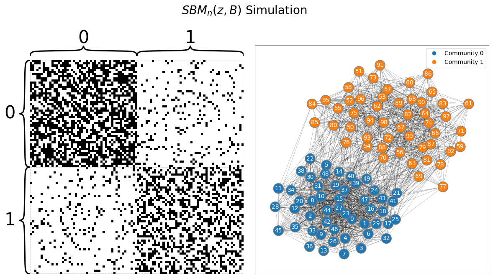
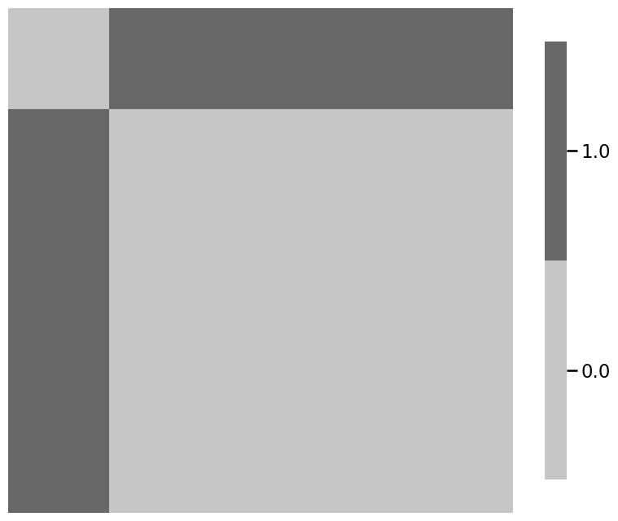

Code Reproducibility#
import numpy as np
from graphbook_code import heatmap
def generate_unit_circle(radius):
diameter = 2*radius + 1
rx = ry = diameter/2
x, y = np.indices((diameter, diameter))
circle_dist = np.hypot(rx - x, ry - y)
diff_from_radius = np.abs(circle_dist - radius)
less_than_half = diff_from_radius < 0.5
return less_than_half.astype(int)
def add_smile():
canvas = np.zeros((51, 51))
canvas[2:45, 2:45] = generate_unit_circle(21)
mask = np.zeros((51, 51), dtype=bool)
mask[np.triu_indices_from(mask)] = True
upper_left = np.rot90(mask)
canvas[upper_left] = 0
return canvas
def smile_probability(upper_p, lower_p):
smiley = add_smile()
P = generate_unit_circle(25)
P[5:16, 25:36] = generate_unit_circle(5)
P[smiley != 0] = smiley[smiley != 0]
mask = np.zeros((51, 51), dtype=bool)
mask[np.triu_indices_from(mask)] = True
P[~mask] = 0
# symmetrize the probability matrix
P = (P + P.T - np.diag(np.diag(P))).astype(float)
P[P == 1] = lower_p
P[P == 0] = upper_p
return P
P = smile_probability(.95, 0.05)
heatmap(P, vmin=0, vmax=1, title="Probability matrix $P$")
<Axes: title={'left': 'Probability matrix $P$'}>
from graspologic.simulations import sample_edges
A = sample_edges(P, directed=False, loops=False)
heatmap(A.astype(int), title="$IER_n(P)$ sample")
<Axes: title={'left': '$IER_n(P)$ sample'}>
import numpy as np
from math import comb
node_count = np.arange(2, 51)
log_unique_network_count = np.array([comb(n, 2) for n in node_count])*np.log10(2)
from graphbook_code import draw_multiplot
from graspologic.simulations import er_np
n = 50 # network with 50 nodes
p = 0.3 # probability of an edge existing is .3
# sample a single simple adjacency matrix from ER(50, .3)
A = er_np(n=n, p=p, directed=False, loops=False)
# and plot it
draw_multiplot(A.astype(int), title="$ER_{50}(0.3)$ Simulation")
array([<Axes: >, <Axes: >], dtype=object)
p = 0.7 # network has an edge probability of 0.7
# sample a single adjacency matrix from ER(50, 0.7)
A = er_np(n=n, p=p, directed=False, loops=False)
from graphbook_code import plot_vector
import numpy as np
n = 100 # number of students
# z is a column vector of 50 1s followed by 50 2s
# this vector gives the school each of the 100 students are from
z = np.repeat([1, 2], repeats=n//2)
plot_vector(z, title="$\\vec z$, Node Assignment Vector",
legend_title="School", color="qualitative",
ticks=[0.5, 49.5, 99.5], ticklabels=[1, 50, 100],
ticktitle="Student")
<Axes: title={'left': '$\\vec z$, Node Assignment Vector'}, ylabel='Student'>
from graphbook_code import heatmap
K = 2 # community count
# construct the block matrix B as described above
B = np.array([[0.6, 0.1],
[0.1, 0.4]])
heatmap(B, xticklabels=[1, 2], yticklabels=[1,2], vmin=0,
vmax=1, annot=True, xtitle="School",
ytitle="School", title="Block Matrix $B$")
<Axes: title={'left': 'Block Matrix $B$'}, xlabel='School', ylabel='School'>
from graspologic.simulations import sbm
from graphbook_code import draw_multiplot
# sample a graph from SBM_{100}(tau, B)
A, labels = sbm(n=[n//2, n//2], p=B, directed=False, loops=False, return_labels=True)
draw_multiplot(A, labels=labels, title="$SBM_n(z, B)$ Simulation");

import numpy as np
# generate a reordering of the n nodes
permutation = np.random.choice(n, size=n, replace=False)
Aperm = A[permutation][:,permutation]
yperm = labels[permutation]
heatmap(Aperm, title="Nodes randomly reordered")
<Axes: title={'left': 'Nodes randomly reordered'}>
def ohe_comm_vec(z):
"""
A function to generate the one-hot-encoded community
assignment matrix from a community assignment vector.
"""
K = len(np.unique(z))
n = len(z)
C = np.zeros((n, K))
for i, zi in enumerate(z):
C[i, zi - 1] = 1
return C
import numpy as np
from graphbook_code import lpm_heatmap
n = 100 # the number of nodes in our network
# design the latent position matrix X according to
# the rules we laid out previously
X = np.zeros((n,2))
for i in range(0, n):
X[i,:] = [(n - i)/n, i/n]
lpm_heatmap(X, ytitle="Person", xticks=[0.5, 1.5], xticklabels=[1, 2],
yticks=[0.5, 49.5, 99.5], yticklabels=[1, 50, 100],
xtitle="Latent Dimension", title="Latent Position Matrix, X")
<Axes: title={'left': 'Latent Position Matrix, X'}, xlabel='Latent Dimension', ylabel='Person'>
from graspologic.simulations import rdpg
from graphbook_code import heatmap
# sample an RDPG with the latent position matrix
# created above
A = rdpg(X, loops=False, directed=False)
# and plot it
heatmap(A.astype(int), xtitle="Person", ytitle="Person",
title="$RDPG_{100}(X)$ Simulation")
<Axes: title={'left': '$RDPG_{100}(X)$ Simulation'}, xlabel='Person', ylabel='Person'>
import numpy as np
def block_mtx_psd(B):
"""
A function which indicates whether a matrix
B is positive semidefinite.
"""
return np.all(np.linalg.eigvals(B) >= 0)
import numpy as np
from graphbook_code import heatmap
B = np.array([[0.6, 0.2],
[0.2, 0.4]])
heatmap(B, title="A homophilic block matrix", annot=True, vmin=0, vmax=1)
block_mtx_psd(B)
# True
True
B_indef = np.array([[.1, .2],
[.2, .1]])
block_mtx_psd(B_indef)
# False
False
# a positive semidefinite kidney-egg block matrix
B_psd = np.array([[.6, .2],
[.2, .2]])
block_mtx_psd(B_psd)
# True
# an indefinite kidney-egg block matrix
B_indef = np.array([[.1, .2],
[.2, .2]])
block_mtx_psd(B_indef)
#False
False
# a positive semidefinite core-periphery block matrix
B_psd = np.array([[.6, .2],
[.2, .1]])
block_mtx_psd(B_psd)
# True
# an indefinite core-periphery block matrix
B_indef = np.array([[.6, .2],
[.2, .05]])
block_mtx_psd(B_indef)
# False
False
# an indefinite disassortative block matrix
B = np.array([[.1, .5],
[.5, .2]])
block_mtx_psd(B)
# False
False
# homophilic, and hence positive semidefinite, block matrix
B = np.array([[0.6, 0.2],
[0.2, 0.4]])
# generate square root matrix
sqrtB = np.linalg.cholesky(B)
# verify that the process worked through by equality element-wise
# use allclose instead of array_equal because of tiny
# numerical precision errors
np.allclose(sqrtB @ sqrtB.T, B)
# True
True
from graphbook_code import ohe_comm_vec
def lpm_from_sbm(z, B):
"""
A function to produce a latent position matrix from a
community assignment vector and a block matrix.
"""
if not block_mtx_psd(B):
raise ValueError("Latent position matrices require PSD block matrices!")
# one-hot encode the community assignment vector
C = ohe_comm_vec(z)
# compute square root matrix
sqrtB = np.linalg.cholesky(B)
# X = C*sqrt(B)
return C @ sqrtB
# make a community assignment vector for 25 nodes / community
nk = 25
z = np.repeat([1, 2], nk)
# latent position matrix for an equivalent RDPG
X = lpm_from_sbm(z, B)
from graphbook_code import generate_sbm_pmtx
# generate the probability matrices for an RDPG using X and SBM
P_rdpg = X @ X.T
P_sbm = generate_sbm_pmtx(z, B)
# verify equality element-wise
np.allclose(P_rdpg, P_sbm)
# True
True
import numpy as np
from graspologic.simulations import sample_edges
from graphbook_code import heatmap, plot_vector, \
generate_sbm_pmtx
def dcsbm(z, theta, B, directed=False, loops=False, return_prob=False):
"""
A function to sample a DCSBM.
"""
# uncorrected probability matrix
Pp = generate_sbm_pmtx(z, B)
theta = theta.reshape(-1)
# apply the degree correction
Theta = np.diag(theta)
P = Theta @ Pp @ Theta.transpose()
network = sample_edges(P, directed=directed, loops=loops)
if return_prob:
network = (network, P)
return network
# Observe a network from a DCSBM
nk = 50 # students per school
z = np.repeat([1, 2], 50)
B = np.array([[0.6, 0.2], [0.2, 0.4]]) # same probabilities as from SBM section
theta = np.tile(np.linspace(1, 0.5, nk), 2)
A, P = dcsbm(z, theta, B, return_prob=True)
# Visualize
plot_vector(z, title="$\\vec z$", legend_title="School", color="qualitative",
ticks=[0.5, 49.5, 99.5], ticklabels=[1, 50, 100],
ticktitle="Student")
plot_vector(theta, title="$\\vec \\theta$",
legend_title="Degree-Correction Factor",
ticks=[0.5, 49.5, 99.5], ticklabels=[1, 50, 100],
ticktitle="Student")
heatmap(P, title="$P = \\Theta C B C^\\top \\Theta^\\top$", vmin=0, vmax=1)
heatmap(A.astype(int), title="Sample of $DCSBM_n(\\vec z, \\vec \\theta, B)$")
<Axes: title={'left': 'Sample of $DCSBM_n(\\vec z, \\vec \\theta, B)$'}>
import numpy as np
n = 100
Z = np.ones((n, n))
for i in range(0, int(n / 2)):
Z[int(i + n / 2), i] = 3
Z[i, int(i + n / 2)] = 3
Z[0:50, 0:50] = Z[50:100, 50:100] = 2
np.fill_diagonal(Z, 0)
from graphbook_code import heatmap
labels = np.repeat(["L", "R"], repeats=n/2)
heatmap(Z.astype(int), title="Cluster assignment matrix",
inner_hier_labels=labels)
<Axes: title={'left': 'Cluster assignment matrix'}>
from graphbook_code import siem, plot_vector
p = np.array([0.1, 0.3, 0.8])
A = siem(n, p, Z)
plot_vector(p, title="probability vector", vmin=0, vmax=1, annot=True)
heatmap(A.astype(int), title="$SIEM_n(Z, \\vec p)$ sample",
inner_hier_labels=labels)
<Axes: title={'left': '$SIEM_n(Z, \\vec p)$ sample'}>
from graspologic.simulations import sbm
import numpy as np
from graphbook_code import dcsbm
from sklearn.preprocessing import LabelEncoder
# Create block probability matrix B
K = 3
B = np.full(shape=(K, K), fill_value=0.15)
np.fill_diagonal(B, 0.4)
# degree-correct the different groups for linkedin
ml, admin, marketing = nks = [50, 25, 25]
theta = np.ones((np.sum(nks), 1))
theta[(ml):(ml + admin), :] = np.sqrt(2)
# our dcsbm function only works with communities encoded 1,2,...,K
# so we'll use a LabelEncoder to map labels to natural numbers
labels = np.repeat(["ML", "AD", "MA"], nks)
le = LabelEncoder().fit(labels)
z = le.transform(labels) + 1
# sample the random networks
A_facebook = sbm(n=nks, p=B)
A_insta = sbm(n=nks, p=B)
A_linkedin, P_linkedin = dcsbm(z, theta, B, return_prob=True)
from graphbook_code import generate_sbm_pmtx, heatmap
# we already returned P_linkedin for the linkedin
# probability matrix from dcsbm() function
P_facebook_insta = generate_sbm_pmtx(z, B)
# when plotting for comparison purposes, make sure you are
# using the same scale from 0 to 1
heatmap(P_facebook_insta, vmin=0, vmax=1)
heatmap(P_linkedin, vmin=0, vmax=1)
heatmap(P_linkedin - P_facebook_insta, vmin=0, vmax=1)
<Axes: >
from graspologic.embed import MultipleASE as mase
from graphbook_code import lpm_heatmap
embedder = mase(n_components=3, svd_seed=0)
# obtain shared latent positions
S = embedder.fit_transform([P_facebook_insta, P_facebook_insta, P_linkedin])
lpm_heatmap(S)
<Axes: >
import matplotlib.pyplot as plt
R_facebook = embedder.scores_[0]
R_insta = embedder.scores_[1]
R_linkedin = embedder.scores_[2]
# and plot them
smin = np.min(embedder.scores_)
smax = np.max(embedder.scores_)
fig, axs = plt.subplots(1, 3, figsize=(20, 7))
heatmap(R_facebook, vmin=smin, vmax=smax, ax=axs[0], annot=True, title="facebook score matrix")
heatmap(R_insta, vmin=smin, vmax=smax, ax=axs[1], annot=True, title="Instagram score matrix")
heatmap(R_linkedin, vmin=smin, vmax=smax, ax=axs[2], annot=True, title="LinkedIn score matrix")
<Axes: title={'left': 'LinkedIn score matrix'}>
from graphbook_code import lpm_from_sbm
X_facebook_insta = lpm_from_sbm(z, B)
from graspologic.simulations import rdpg_corr
# generate the network samples
rho = 0.7
facebook_correlated_network, insta_correlated_network = rdpg_corr(
X_facebook_insta, Y=None, r=rho
)
# the difference matrix
correlated_difference_matrix = np.abs(
facebook_correlated_network - insta_correlated_network
)
# the total number of differences
correlated_differences = correlated_difference_matrix.sum()
rho_nil = 0.0
facebook_uncorrelated_network, insta_uncorrelated_network = rdpg_corr(
X_facebook_insta, Y=None, r=rho_nil
)
# the difference matrix
uncorrelated_difference_matrix = np.abs(
facebook_uncorrelated_network - insta_uncorrelated_network
)
# the total number of differences
uncorrelated_differences = uncorrelated_difference_matrix.sum()
import numpy as np
from graspologic.simulations import sample_edges
nodenames = [
"SI", "L", "H/E",
"T/M", "BS"
]
# generate probability matrices
n = 5 # the number of nodes
P_earthling = 0.3*np.ones((n, n))
signal_subnetwork = np.zeros((n, n), dtype=bool)
signal_subnetwork[1:n, 0] = True
signal_subnetwork[0, 1:n] = True
P_astronaut = np.copy(P_earthling)
P_astronaut[signal_subnetwork] = np.tile(np.linspace(0.4, 0.9, num=4), 2)
# sample two networks
A_earthling = sample_edges(P_earthling)
A_astronaut = sample_edges(P_astronaut)
# plot probability matrices and their differences on the same scale
heatmap(P_earthling, vmin=0, vmax=1)
heatmap(P_astronaut, vmin=0, vmax=1)
heatmap(np.abs(P_astronaut - P_earthling), vmin=0, vmax=1)
<Axes: >
# plot the signal subnetwork
ax = heatmap(signal_subnetwork)

# sample the classes of each sample
M = 200 # the number of training and testing samples
pi_astronaut = 0.45
pi_earthling = 0.55
np.random.seed(0)
yvec = np.random.choice(2, p=[pi_earthling, pi_astronaut], size=M)
# sample network realizations given the class of each sample
Ps = [P_earthling, P_astronaut]
As = np.stack([sample_edges(Ps[y]) for y in yvec], axis=2)